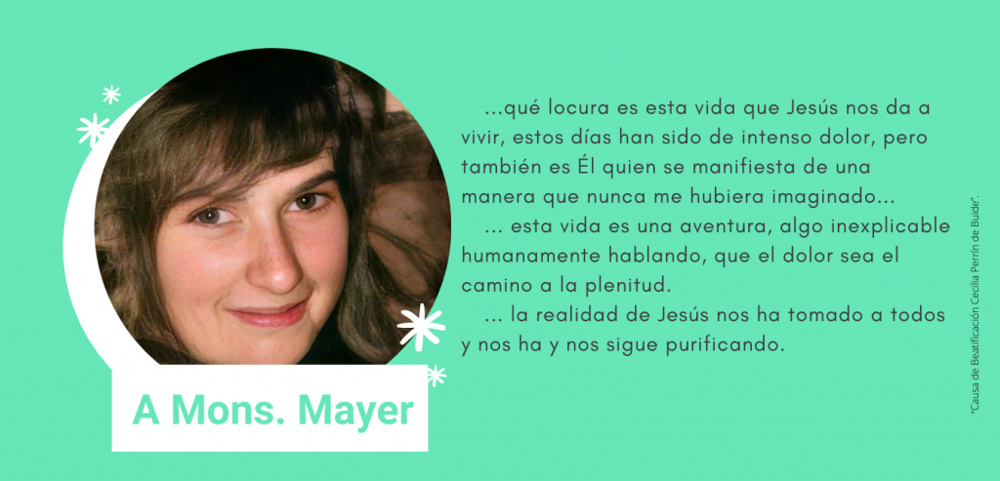
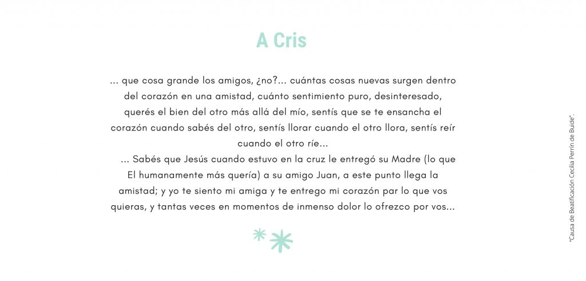
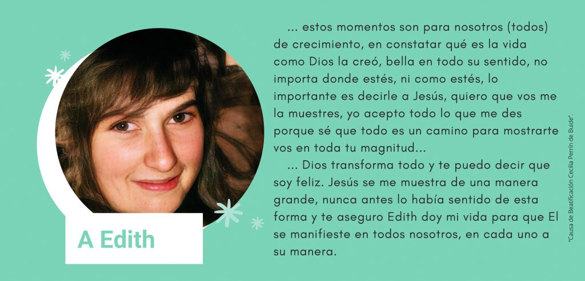
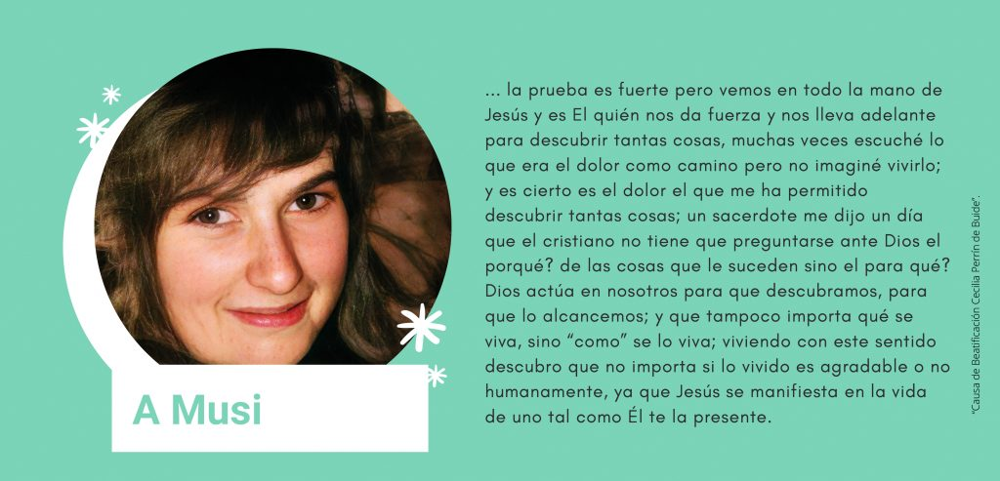
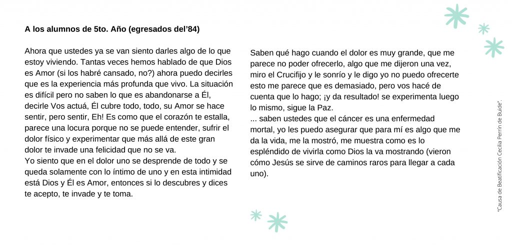
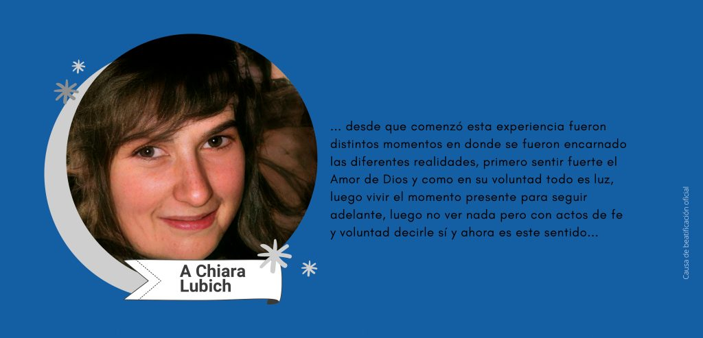

L’impossibilità di parlare non ha limitato il suo desiderio di alimentare l’amore reciproco, perciò ha trovato nei suoi scritti il modo di donare ciò che sperimentava nella sua anima: l’amore di Dio tramite il dolore.






